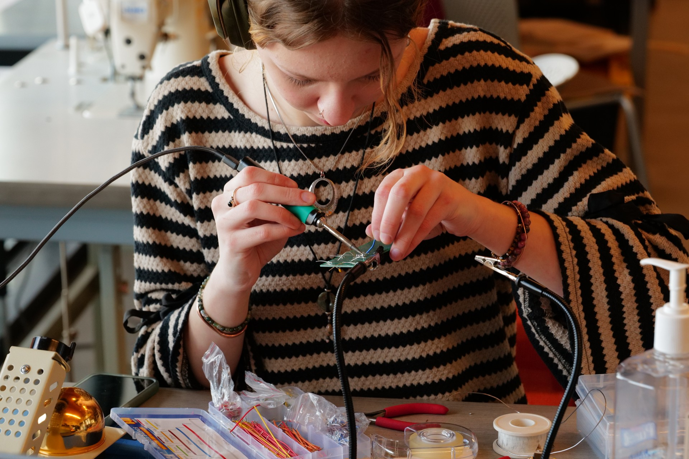
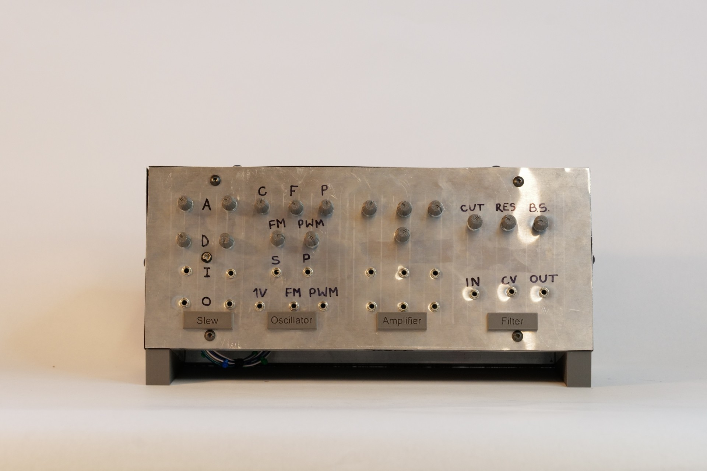
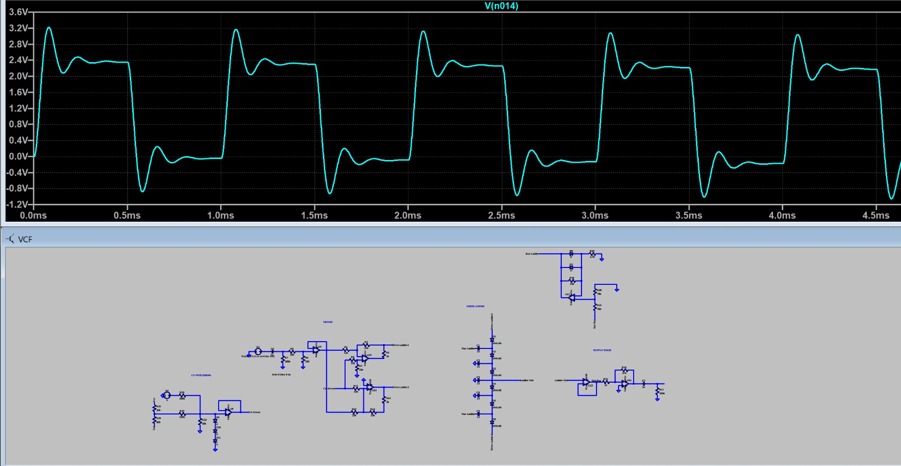
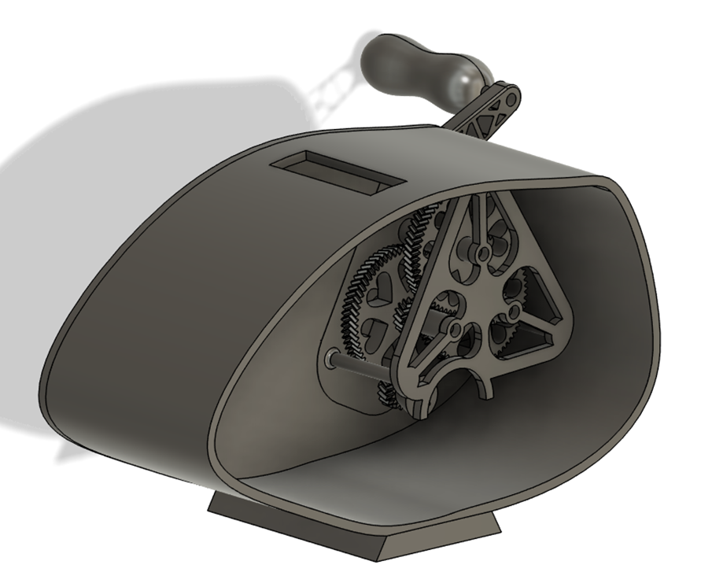
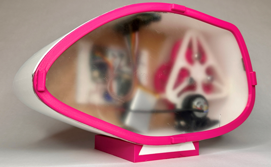

I'm interested in circuit design, prototyping, and hands-on engineering work. I enjoy projects that involve building, testing, and debugging physical systems.
Outside of school, I enjoy playing, creating, and listening to music, climbing, hiking, and art, but I especially love learning and creating.
I work in the campus makerspace where I help students and staff with projects both related and unrelated to engineering, and I am also a teacher's assistant for a freshman engineering course, where I grade and provide feedback on student coursework.



A modular and fully analog audio synthesizer that produces audio signals and shapes them through each module. Includes a VCO, VCA, VCF, and slew limiter capable of creating a wide variety of synthesized sounds.
The primary challenges in this project involved debugging complex analog circuits, working within time and budget constraints, and developing a deeper understanding of electronics beyond the scope of the course material.


Designed and built a hand-crank generator system that converts mechanical input into electrical output. The system includes a fully modeled gear train, a generator driving a motor, and a circuit for charging a battery.
Integrated a microcontroller to measure system outputs and display real-time data on an LCD. The project involved CAD design, fabrication, circuit implementation, and embedded programming.